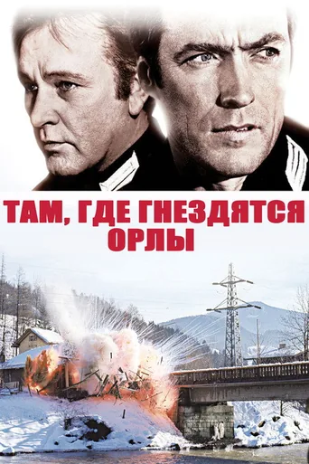

Там, где гнездятся орлы 1968
Во время Второй Мировой войны британский самолет сбивают над нацистской территорией. Единственного выжившего американского генерала немцы забирают в ближайший штаб СС. Немцам неизвестно, что генерал обладает полным набором знаний об операции «День Д». Британцы решают, что генералу ни в коем случае нельзя позволить раскрыть детали высадки в Нормандии и приказывают майору Джону Смиту отправиться на его спасение с отрядом спецназа. В отряд входит американский рейнджер лейтенант Шаффер, озадаченный своим участием в британской операции. Когда один из солдат погибает после сброса с парашютом, Шаффер начинает подозревать, что у миссии Смита цель более секретная.
Открыть в каталогеДанные и постеры принадлежат их правообладателям. Этот продукт использует TMDB API, но не одобрен и не сертифицирован TMDB.